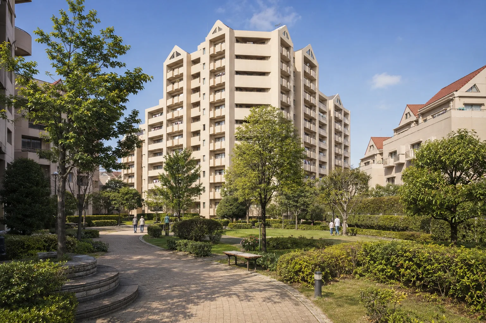
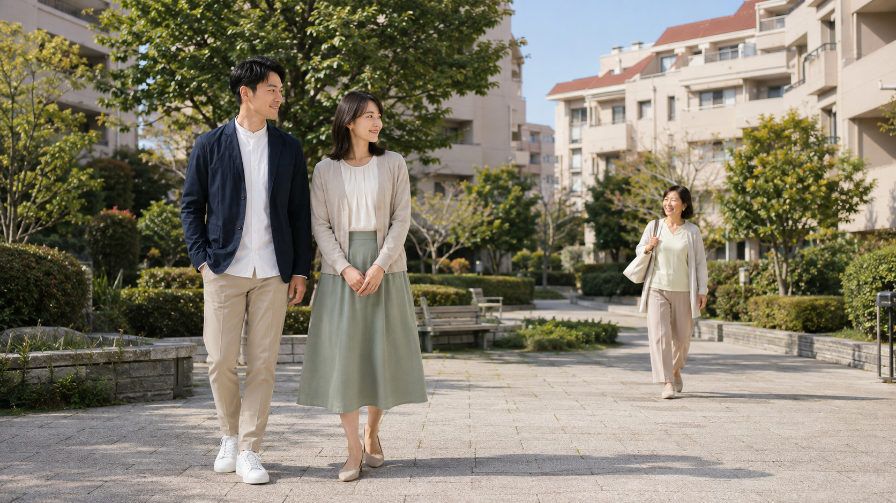
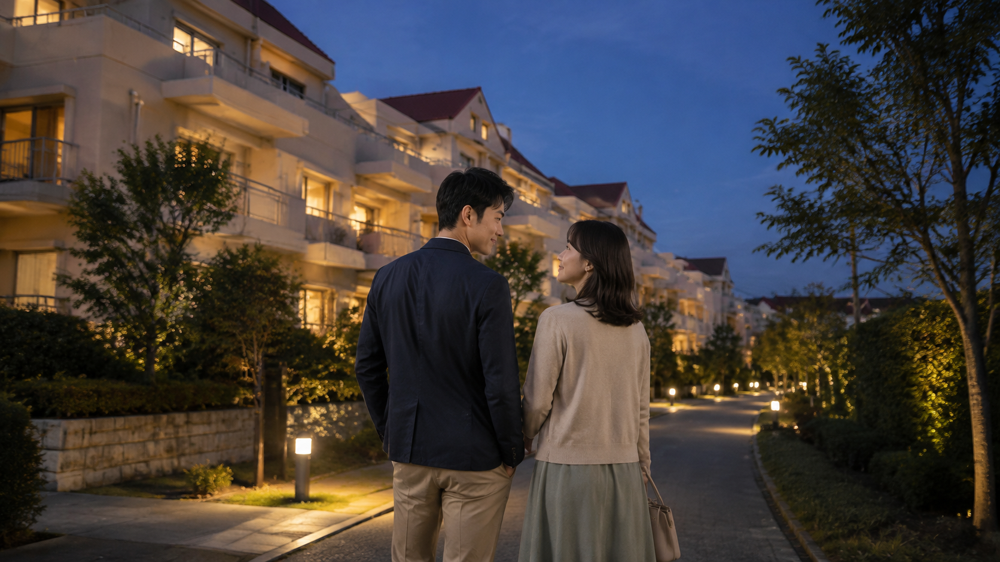

ふれあい約287戸＋かがやき約293戸。二街区の合算。
YOKOHAMA · TSUZUKI · KAGAHARA
家族の時間に、
もう少し広さと
緑を。
横浜市都筑区加賀原。
緑道とともに暮らす、約580戸の街。
「ふれあいの街」と「かがやきの街」。二つの街区が中央広場を囲み、30年以上の時間を重ねてきました。
既存素材をもとに制作したイメージ映像。現況を保証するものではありません。
01AT A GLANCE
THE FACTS BEHIND THE FEELING
数字の先に、
暮らしの輪郭が見える。
中央広場と管理棟を挟んで計画された一つの住宅群。
公開事例では115㎡を超える住戸まで確認。
街区が形成された年代。築年月は棟ごとに異なる。
月出松公園。緑道とつながる木立と丘のある公園。
ゆうばえのみち。公園や緑地をつなぐ生活動線。
戸数は二街区の合算、面積は公開中または過去の個別住戸事例です。全住戸の仕様を示す数字ではありません。

02ONE TOWN, TWO DISTRICTS
A PLANNED COMMUNITY
二つの街区が、
一つの暮らしをつくる。
旧住宅・都市整備公団が分譲した「ふれあいの街」と、神奈川県住宅供給公社が分譲した「かがやきの街」。中央広場と管理棟を挟む形で計画され、住棟の間には緑地や余白が設けられています。
公園・緑道へつながる生活動線
神奈川県住宅供給公社かがやきの街約293戸・全9棟
中央広場管理棟
旧住宅・都市整備公団ふれあいの街約287戸
●●●●位置関係と計画の考え方を表した概念図です。正確な敷地図・棟配置図ではありません。
03ROOM TO GROW
PUBLIC UNIT EXAMPLES
広さは、家族の変化を
受け止める余白になる。
公開されている売出・賃貸事例では、約76㎡から115㎡を超える住戸も確認できます。数字を、家族の時間と場所へ置き換えて考えます。
個室を考えやすい
子どもの成長や家族構成に合わせ、個室と共用空間の配分を検討しやすい。
仕事の場所を分ける
ダイニングと在宅勤務スペースを分ける間取り変更の余地を考えられる。
集まる場所を残す
個室を確保しながら、家族が同時に過ごすLDKの広さも検討できる。
物の居場所をつくる
収納、趣味、季節用品など、生活の変化を受け止める場所を計画しやすい。
公開事例であり、全住戸の正式な面積範囲ではありません。
面積、間取り、設備、眺望、日照、価格、管理費等は棟・住戸ごとに異なります。掲載元の写真は転載せず、情報源へのリンクとして扱っています。
04RENOVATION
AGE AS A STARTING POINT
築年数を隠さず、
住まいを更新する。
築30年を超えることは明確な検討事項です。一方で、個別住戸では和室から洋室への変更やユニットバス交換の施工例が確認できます。広さを土台に、今の家族に合う内装や設備へ更新する考え方があります。
既存の間取り・設備
棟・住戸ごとの状態、配管、構造上の制約を確認する。
暮らしから逆算
個室、LDK、仕事、収納の優先順位を整理する。
現代の暮らしへ
専門家と相談し、実現可能な内装・設備更新を選ぶ。
上記は個別住戸の施工例です。全住戸で同じ工事が可能であることや、マンション全体の状態を示すものではありません。
05GREEN MATRIX
A NETWORK OF GREEN
玄関を出た先から、
緑のある生活動線が始まる。
港北ニュータウンでは、緑道を主骨格として公園や緑地を連続させ、車と歩行者の動線を分ける「グリーンマトリックス」の考え方が採り入れられました。
ゆうばえのみち
散歩やランニング、地域の移動に使われる緑道。
月出松公園
縄文中期の遺跡上に整備された、木立と丘のある公園。

朝、緑のある道を歩く。
住棟の間の植栽から、緑道へ。実際の通学経路は住戸ごとに確認します。
放課後、公園という選択肢。
月出松公園や周辺公園。遊ぶ場所までの動線と安全性は、現地で歩いて確かめる。
夕方、家族で散歩する。
季節の植物や木立を感じる時間。30年以上育った緑は、新築にはない時間の蓄積です。
休日、生活圏を広げる。
川和富士公園、ららぽーと横浜、周辺の街へ。徒歩・バス・車を使い分ける郊外の暮らし。
06COMMUNITY
A PLACE WITH SHARED MEMORIES
住戸の外にも、
家族の記憶が育つ。
加賀原ぎんなん公園では納涼大会、盆踊り、子ども神輿が行われ、地域ではシンフォニックヒルズ日曜コンサートなどの交流行事が行われてきました。
納涼大会・盆踊り
横浜市の記録では、家族連れが参加する地域交流の様子が確認できます。
子ども神輿
地域の子どもたちが参加した開催実績。現在の開催予定は個別確認が必要です。
日曜コンサート
佐江戸加賀原地区の紹介動画で、住民交流の一例として紹介されています。
公式紹介動画を見る ↗過去の開催実績であり、毎年の開催を保証するものではありません。最新の開催情報は地域・行政の案内をご確認ください。
07FAMILY & DAILY LIFE
LIFE BEYOND THE HOME
学校、公園、買い物。
暮らしを点ではなく線で見る。
08ACCESS & CONVENIENCE
CHOOSE BY PURPOSE
目的から、
使う駅と移動手段を選ぶ。
駅直結の住宅ではありません。川和町、中山・鴨居、市が尾、ららぽーと横浜を、路線と利用場面に合わせて考える郊外型の生活圏です。
約270ショップ
駅徒歩分数は棟や経路で異なり、公開情報では川和町駅まで概ね16〜19分などの差があります。全体の一律な所要時間ではありません。
09BEFORE YOU DECIDE
HONEST CHECKLIST
築年数の先にある価値は、
現地と資料で確かめる。
成熟した植栽や形成済みのコミュニティがある一方、管理、修繕、設備は個別確認が必要です。広告の言葉ではなく、実物と資料から判断してください。
OFFICIAL SAFETY INFORMATION
横浜市ハザードマップ ↗安全は断定せず、公式地図で確認する。
浸水等の情報は、横浜市の都筑区ハザードマップで、検討住戸の位置とあわせて確認してください。
10FAQ
FACTS TO CONFIRM
検討前によくある質問。
ふれあいの街とかがやきの街の違いは？
ふれあいの街は約287戸、かがやきの街は約293戸で、中央広場と管理棟を挟む二街区として計画されています。分譲主体も異なります。
約580戸とは何の数字ですか？
二街区の戸数を合算した概数です。各街区や各棟の戸数ではありません。
すべての住戸が広いのですか？
全住戸が100㎡以上という意味ではありません。公開事例として約76.74㎡、79.92㎡、115.75㎡などを確認していますが、面積・間取り・設備は棟と住戸で異なります。
築年月や階数は共通ですか？
棟によって異なります。1992〜1993年に形成された街区ですが、正確な築年月、階数、構造は検討する棟の資料で確認してください。
駅まで何分ですか？
棟、敷地内動線、経路、掲載媒体で異なります。川和町駅まで概ね16〜19分などの公開差があるため、一律の徒歩分数として表示していません。
学区、駐車場、ペット、修繕状況は？
加賀原一丁目24番の指定校は都田西小学校・川和中学校として確認できますが、学区は最新の横浜市情報をご確認ください。駐車場、ペット規約、管理費、修繕状況は街区・棟・住戸ごとの最新資料が必要です。
11SOURCES
TRACEABLE INFORMATION
地域に根差すために、
情報源を開いておく。
行政・公式情報を優先し、物件固有の情報は不動産会社・ポータルの公開事例として区別します。外部サイトの写真は転載していません。
行政・公式
公園、緑道、学区、地域行事、施設。
不動産会社・ポータル
戸数、街区背景、面積、間取りの公開事例。
SNS・参考事例
個別施工や雰囲気の参考。全体仕様の根拠にはしない。
データ確認日：2026年8月26日
